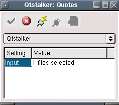

This will allow you to import ASCII data that was exported only by Qtstalker previously. Qtstalker has an export function that dumps the chart from key/data binary data into a ASCII file. This plugin can read this data back in and re-create the chart. This plugin is only useful for fixing data problems or disaster recovery functions. I have included it for those purposes. The new charts will appear in the data/import directory, it's up to you to move them into the appropriate directory.
